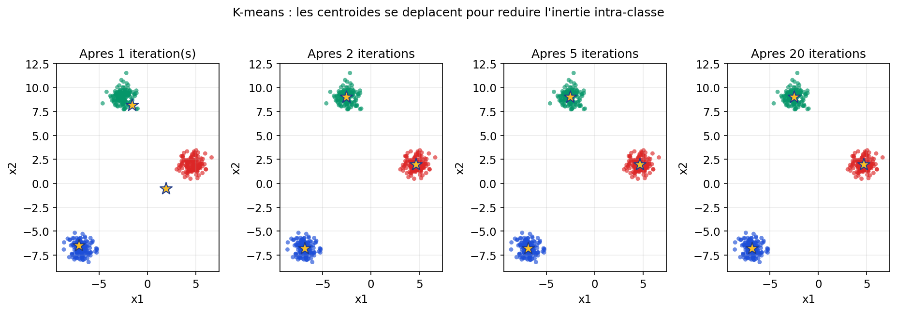

Jusqu’ici, le fil du chapitre ressemblait à une leçon avec corrigé : régression, classification, SVM, arbres, réseaux — partout des exemples (xi, yi) où la cible y était connue. L’apprentissage non supervisé, lui, c’est une autre histoire : imaginez Mowgli dans la jungle — pas de manuel, pas de professeur qui nomme chaque animal ; il observe, se déplace, regroupe ce qui ressemble, découvre des régularités. Les données sont souvent un nuage de points sans étiquette : le but n’est pas de prédire une colonne cible, mais d’explorer la structure (groupes, densités, directions principales de variation).
Ce n’est pas du « hasard » : on définit toujours un objectif mathématique ou une hypothèse de forme (sphères pour K-means, densité pour DBSCAN, sous-espace pour PCA). Mais personne ne vous dit à l’avance combien il y a de classes ni ce qu’elles signifient — c’est vous qui interprétez les groupes ou les axes une fois le calcul fait.
Supervisé vs non supervisé (rappel de perspective)
| Question | Supervisé | Non supervisé |
|---|---|---|
| Donnée typique | Entrées + étiquette (classe, nombre à prédire) | Seulement les entrées (souvent un tableau ou des vecteurs) |
| Objectif | Minimiser une erreur de prédiction | Révéler structure : clusters, variabilité, représentation plus compacte |
| Métaphore | Élève avec le corrigé du manuel | Explorateur (Mowgli) sans noms — il cartographie le terrain |
Dans la suite de ce support, nous développons trois outils incontournables — chacun avec sa logique propre :
On se donne un entier k (nombre de groupes) et on cherche k centroïdes dans l’espace des caractéristiques. Chaque point est assigné au centroïde le plus proche (distance euclidienne usuelle) : on forme des clusters. L’idée est de minimiser l’inertie intra-classe (somme des carrés des distances point–centroïde de son groupe), aussi notée WCSS (Within-Cluster Sum of Squares) :
Algorithme de Lloyd (version standard) : on initialise les k centres (souvent k points tirés au hasard parmi les données, ou méthode k-means++) ; puis on alterne :
L’inertie décroît à chaque étape : le procédé converge, mais vers un optimum local — d’où l’intérêt de relancer plusieurs fois avec des
initialisations différentes (paramètre n_init dans scikit-learn). Si les vrais groupes sont bien séparés et « ronds », K-means retrouve souvent
une partition lisible.
Figure : partition en k = 3 groupes — points colorés par cluster, étoiles = centroïdes

Figure : à initialisation défavorable, les centroïdes se rapprochent des vrais nuages en quelques itérations

K-means ne déduit pas k : vous devez le choisir ou le comparer sur plusieurs valeurs. Un mauvais k peut fusionner des amas distincts ou au contraire découper un groupe naturel. La figure ci-dessous contraste k = 2 et k = 3 sur les mêmes données simulées à trois nuages.
Figure : même jeu de points — k = 2 impose une fusion ; k = 3 sépare mieux

Une heuristique classique est la méthode du coude : on trace l’inertie (ou WCSS) en fonction de k ; on cherche un « pli » où le gain de diminuer l’inertie en ajoutant un cluster redevient marginal. Ce n’est pas une règle automatique — le coude peut être flou — mais c’est un outil de dialogue entre le modèle et l’analyste.
Figure : courbe type « coude » de l’inertie en fonction de k

Forme des clusters : la distance au centroïde favorise des groupes de taille et variance comparables ; des amas très allongés ou emboîtés peuvent être mal décrits. Sensibilité aux outliers : un point extrême peut tirer un centroïde. Échelle des variables : si une colonne est en grandes unités, elle domine la distance — souvent on normalise (z-score, min-max) avant de lancer K-means.
Interprétation : les étiquettes de cluster (0, 1, 2…) n’ont pas de sens intrinsèque : c’est à vous de les relier à un phénomène métier (segments clients, modes de défaillance…). L’exploration non supervisée est souvent une étape avant un modèle supervisé ou un rapport exploratoire.
Prochaine étape de ce cours : la section DBSCAN montrera comment s’affranchir d’un k fixe en suivant la densité ; puis la PCA abordera la réduction de dimension sans chercher des groupes, mais les directions de variance maximale.
Les développements sur DBSCAN (clusters par densité) et PCA (réduction de dimension) poursuivent cette partie sur l’exploration non supervisée. L’apprentissage par renforcement fera l’objet d’une extension dédiée.